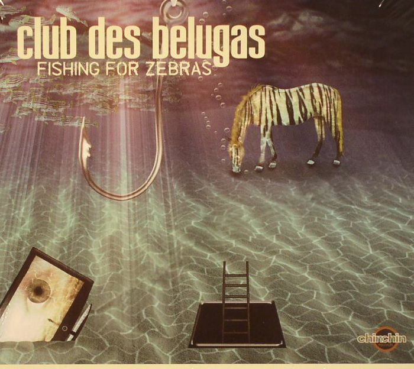

Club des belugas – Fishing for zebras
Geplaatst door: Jaime Lannister op Augustus 5, 2014
Genre: dance
From way back in 2002 Club des Belugas has become one of the leading Nu-Jazz bands in Europe, most probably in the world. Now they present their 8th studio album featuring a ton of women power! This fantastic and outstanding album shows another side of Club des Belugas music, which is revealed by its distinctive and original cover artwork style. Less Jazz and Latin, and more Electronics, Guitars and Triphop elements! Taking 2 years to produce in their new state of the Art studio, Club des Belugas takes us, the listener on the next journey into the future sounds of Nu-Jazz and Electro. Never an imitator, always an innovator, Club des Belugas adds some of the world´s most outstanding and imminent Vocalists: Brenda Boykin, the powerful vocals from our Californian soul jazz diva Anna-Luca, fragile vocals from Sweden Veronika Harcsa, famous Hungarian jazz & trip-hop singer Lene Riebau, broken jazz vocals from Denmark Hélène Vogelsinger, wistful vocals from France Jean Honeymoon, cool vocals from Scotland Lastly and not to forget, 3 powerful and absolutely danceable instrumentals are included. Take a seat, kick back and listen to one of most anticipated Albums of 2014!
Never an imitator, always an innovator
- Never think twice
- Let's go
- Weapon of voice
- Path of nothing
- Home alone
- Welcome to Brazil (Papa Cobana Hiphop Soccer Remix)
- Iko Iko
- The lady was to blame
- The secret
- Just me & my dog
- Braves at home
- Hug somebody but you
- Please don't tease
- Bittersweet